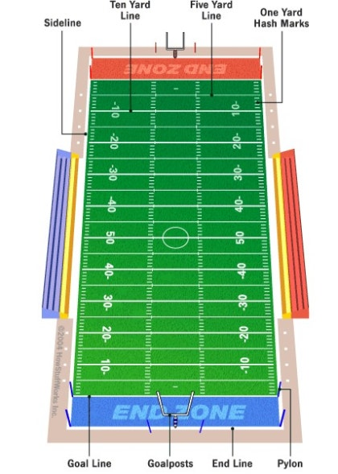
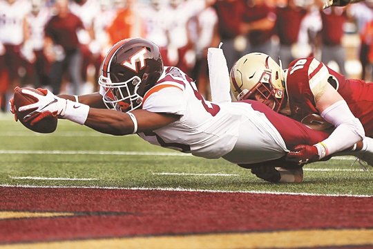
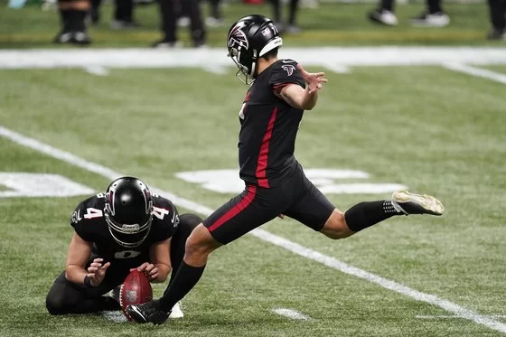
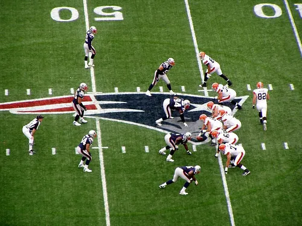

약 가로 120야드(약 110m), 세로 53.3야드(약 48m)
엔드존을 제외한 플레이 지역은 1야드(약 1미터)마다 해쉬마크로 구분
골대는 높이 약 6m, 너비 약 7m로 엔드존 가운데에 위치
양팀당 11명씩 나와 15분씩 4쿼터 진행
상대 진형으로 전진하기 위한 전략 게임
다운 = 기회
공격팀은 4번의 다운 기회동안 공을 전진 시켜야함
엔드존 도달 = 터치다운, 6점을 받음
터치다운 후 하는 킥
골대에 골을 넣으면 +a의 점수를 받음
수비 팀은 터치다운을 막거나 상대팀의 진행을 중지시키는 것이 목표
